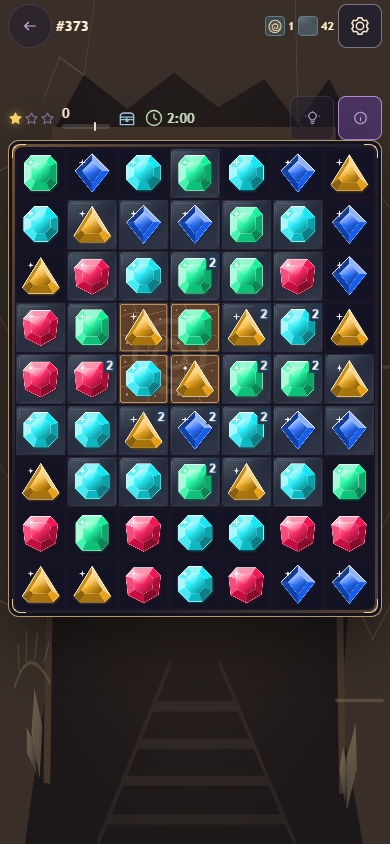
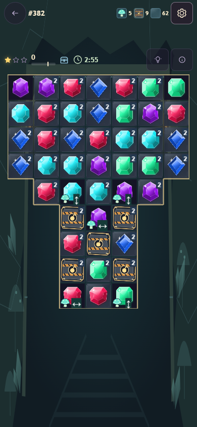
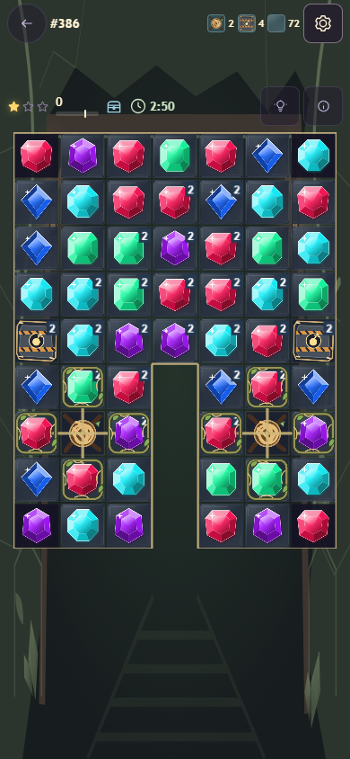
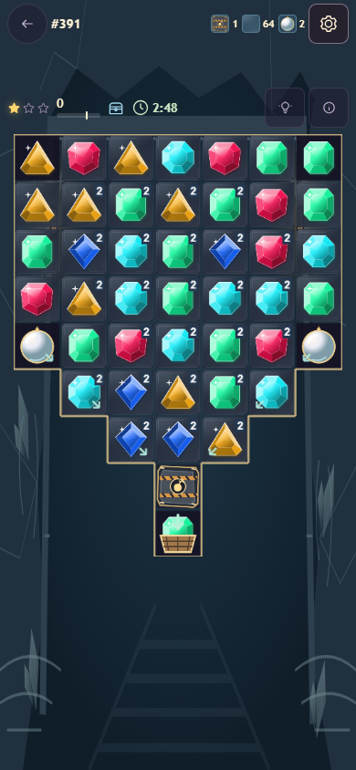
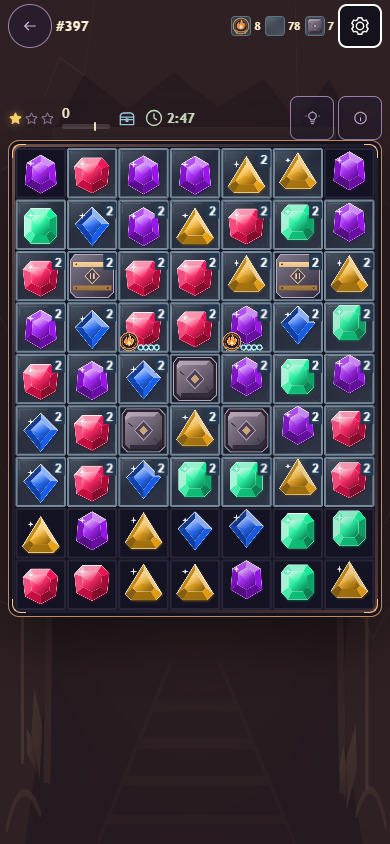

Five deeper mine groups
30 endgame puzzles · Levels 373–402 · Actual in-game screenshots
Watch six individual mechanic demos →

Fossil beds
373–378
Blast the rock casing.
Open buried fossil alcoves.

Glowshroom grotto
379–384
Ignite arrow mushrooms.
Chain row and column bursts.

Root-bound vault
385–390
Open divided wells.
Cut knots and blast gates.

Underground reservoir
391–396
Blast the V-shaped throat.
One basket for every pearl.

Geothermal forge
397–402
Craft and charge bonuses.
Blast narrow basalt chutes.
Shaped boards · Bonus gems required · Unlimited moves
Recorded gameplay tour
All five groups in the running game, with shaped chambers and bonus interactions. Labels identify each chapter.